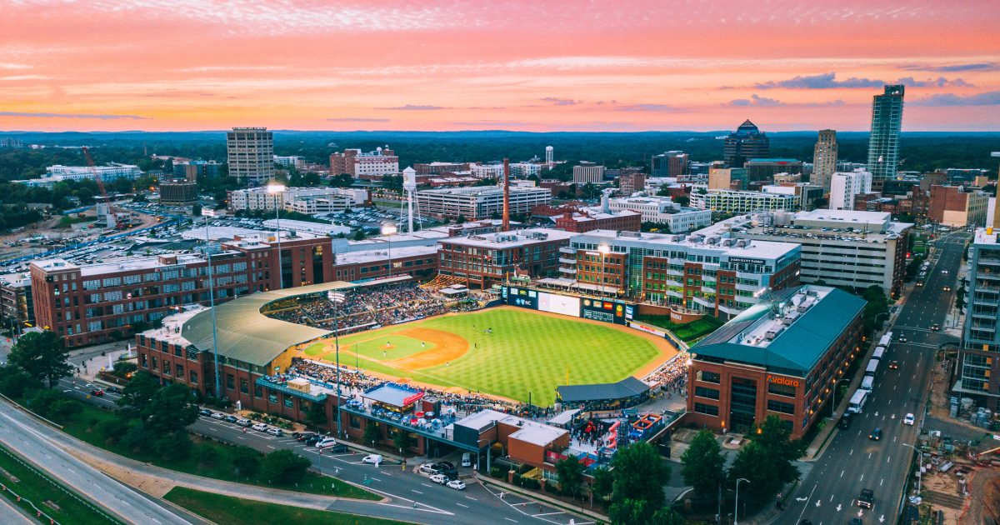
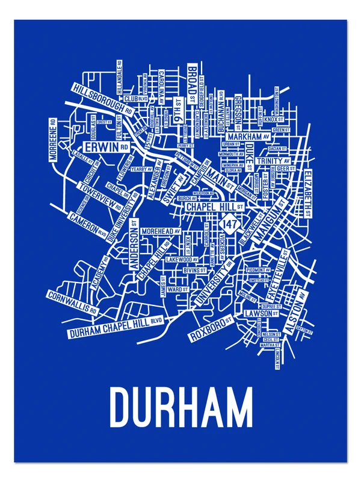

Put your favorite city here. Mine is Durham, NC.
A brief history of Durham... Once known for tobacco, this city in Research Triangle Park is now known for high-tech and medicine.


Weekend Travel Guide to Durham
Built in VSCode by Drew Norris for CTI 110, Fall 2026.